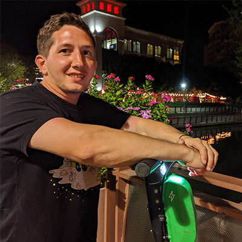

About Me
Hi, My name is Joe. I am currently a student at St. Paul College, where I am working towards an associates degree in Computer Science.
To any potential Employers... I am 30 years old and I have 5 years of experience in the field. My goal with this website is to post all my past, current, and future projects on the "porfolio" page. I have also included my Resume under the (you guessed it) "Resume" page . if you have any questions or would just like to contact me, please feel free to click on the "contact" page and I will get back to you as soon as possible.